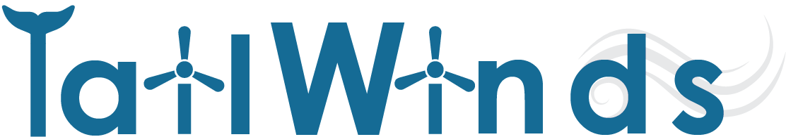
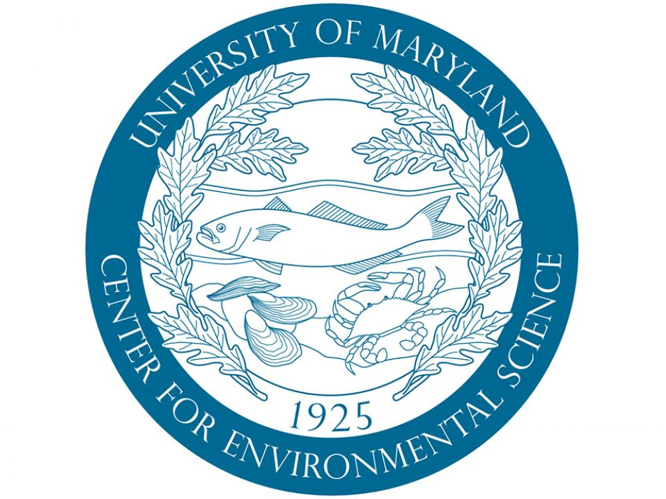
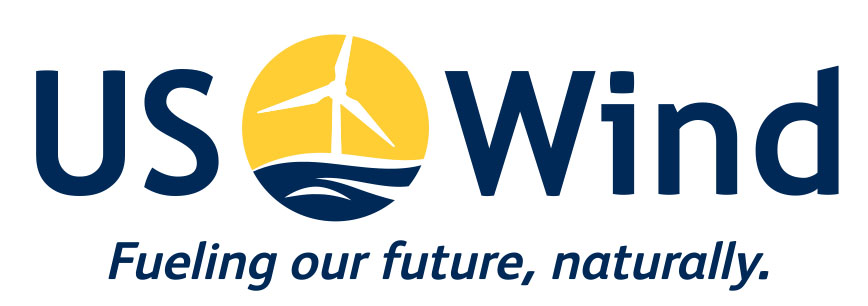
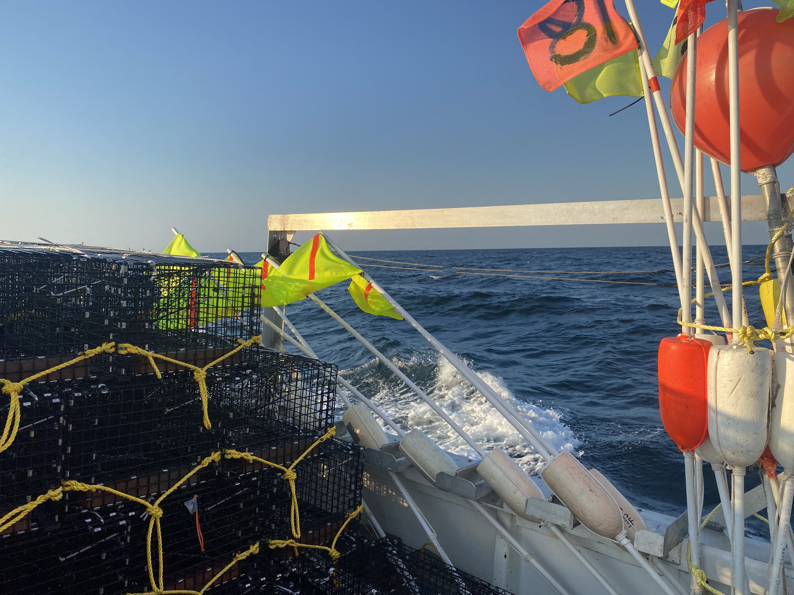
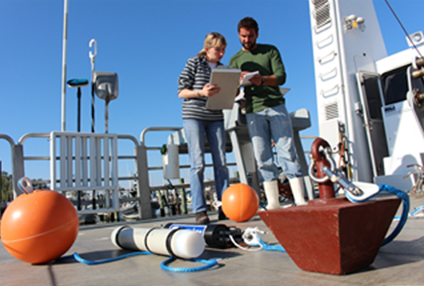
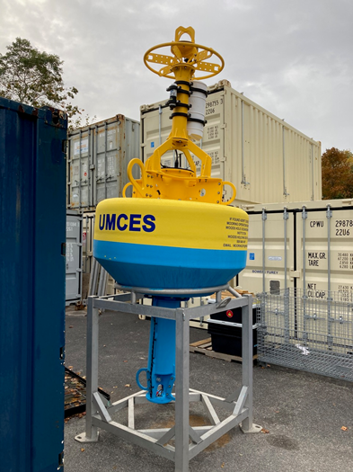
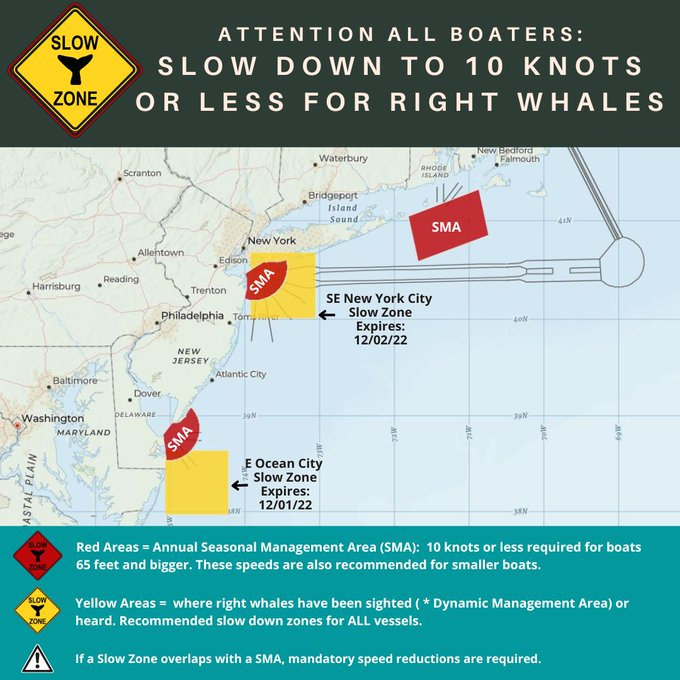
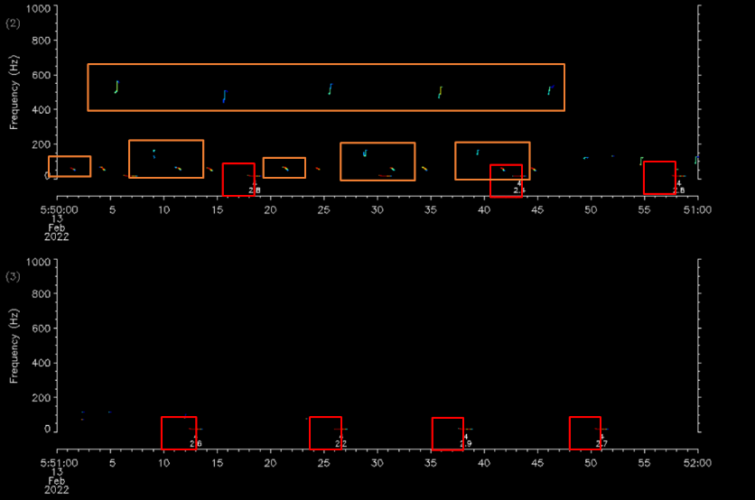

Team for Assessing Impacts to Living resources from offshore WIND turbineS


US Wind, Inc. is developing Lease area OCS-A 0490 in waters offshore of Ocean City, MD. In tandem with this development, UMCES TAILWINDS will undertake a coordinated program of fishery resource and marine mammal monitoring. The program includes monitoring of (1) commercial and recreational fishery resources, with a focus on black sea bass; (2) marine mammals (cetaceans: whales, dolphins and porpoises), using a passive acoustic monitoring array and emphasizing large whales and dolphins; and (3) near real-time detections of baleen whales.
Fishery Resource and Marine Mammal Monitoring


Monitoring projects follow a Before-After-Control-Impact (BACI) and Before-After-Gradient (BAG) design following the before (2022-2024), during (2025-2026), and after construction periods (2027-2028). Field deployments for all monitoring projects utilize Ocean City commercial fishing and recreational charter vessels, as well as the UMCES R/V Rachel Carson. The Fishery Resource Monitoring project evaluates reef and spillover effects and tests ropeless gear, the latter as a conservation measure against whale entanglement. The Marine Mammal Monitoring project deploys two types of listening devices: Rockhopper recorders designed by Cornell University to determine the occurrence and position of large whales (including North Atlantic right whales) and dolphins, and F-POD devices to detect the tonal echolocation clicks of small cetaceans including porpoises. Additionally, this project will deploy biotelemetry receivers to listen for passing fishes, sharks, rays and turtles that have been implanted with transponders. UMCES will also analyze US Wind’s Metocean buoy sensor data for fish and marine mammal detections.
Near Real-time Whale Monitoring



The Near Real-time Whale Monitoring project is a unique partnership between UMCES and Woods Hole Oceanographic Institution that utilizes specialized quiet mooring technology, whale vocalization detection algorithms, and telecommunications to transmit frequent alerts on the presence of baleen whales. The near real-time whale detection system will provide timely alerts on the presence of endangered whales.